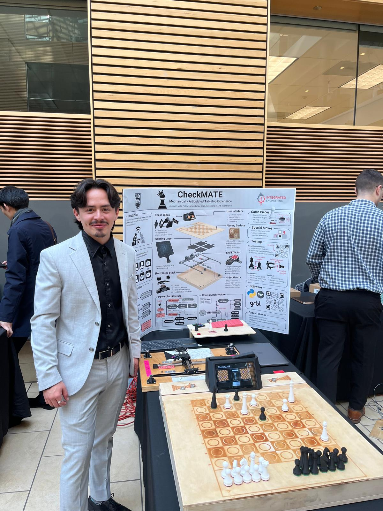
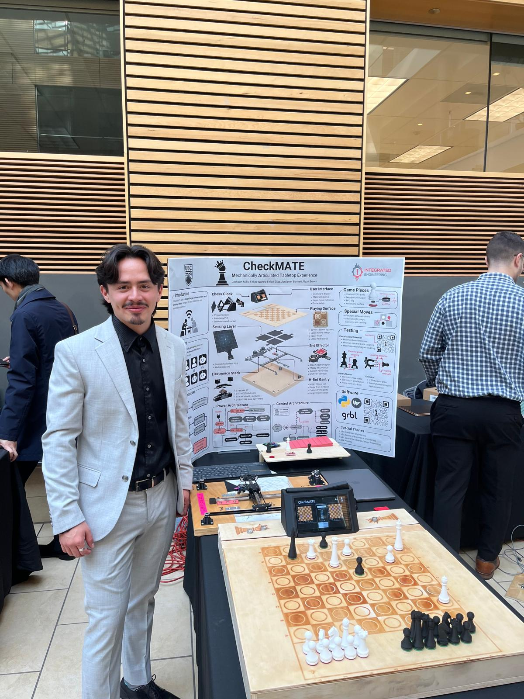

About
Engineer, builder, and globally minded problem solver
I’m an Integrated Engineer focused on clean technology and practical systems. This page is modular—headings, paragraphs, and media blocks can be added or removed without touching layout styles.
Roots & perspective
I grew up moving internationally, adapting to new cultures every few years. That experience shaped how I approach engineering—open, curious, and comfortable building under ambiguity.
Today I gravitate toward cleantech, mechanisms, and well-instrumented experiments. I like projects where physics meets product constraints, and iteration is part of the plan.

Life Journey
A global upbringing that shaped my perspective

Born in Colombia
Beginning of a global journey
Colombia
First School
Started primary education in Scotland
Scotland
Football Passion
Developed love for football in Argentina
Argentina

Language Mastery
Became fluent in Spanish
Spain

Football Academy
Trained at local football academy

Adventure Spirit
Developed love for exploration
Angola

STEM Passion
Discovered engineering through maker spaces
Vietnam
University Prep
Preparing for university applications
High School Graduation
Completed secondary education
Colombia
UBC Engineering
Started Integrated Engineering program
Research Project
Started independent research

Miru Smart Technologies
Led mechanical projects and research
Canada
Australia Adventure
Lived and worked in Australia
Australia
Return to Canada
Back to Canada for continued studies
Canada
Hands-on by default
I prototype early—fixtures, jigs, rough CAD, quick FEA to bound the solution space. I find the fastest way to reduce unknowns is to put something on a bench and measure it.
Why a Futurist?
I try to zoom out: interfaces, failure modes, testability, supply risk, and time-to-learn. A good system plan makes individual components simpler and safer to iterate.
Working principles
- Bias to measure: decide with data; instrument early.
- Clarity beats clever: simple mechanisms > ornate ones.
- Async friendly: communicate decisions + context succinctly.
- Respect constraints: test time and budget are real inputs.
Snapshots


 
